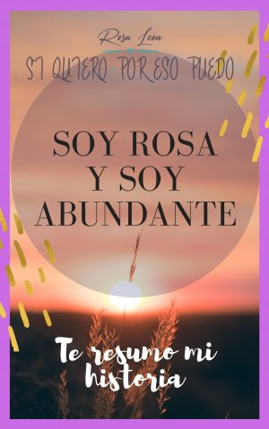
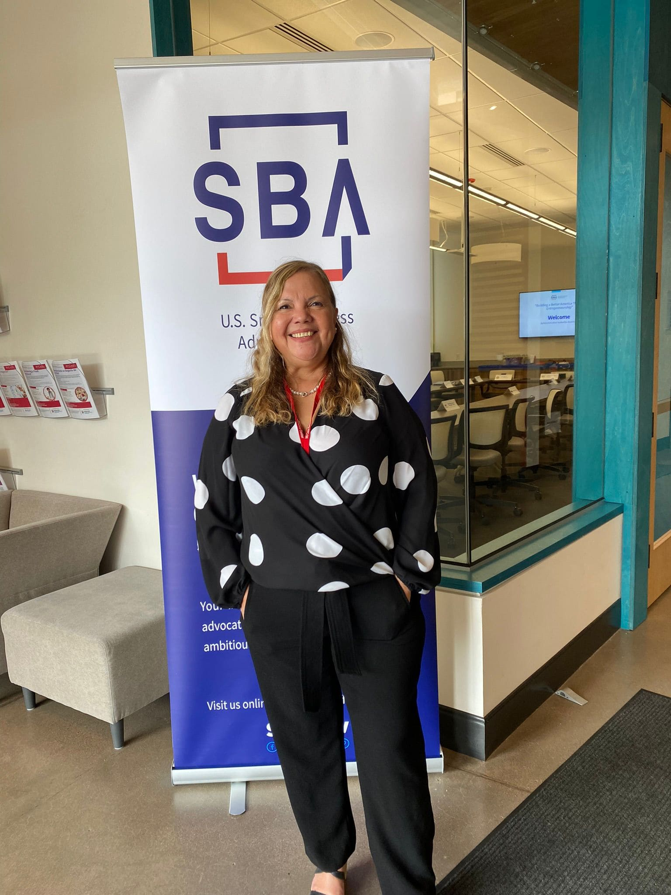
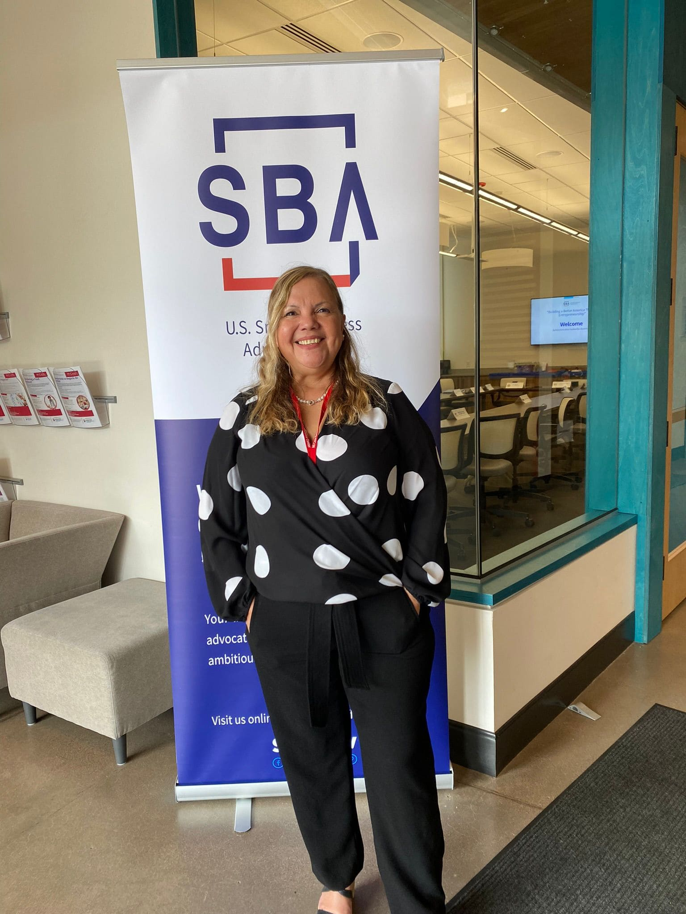
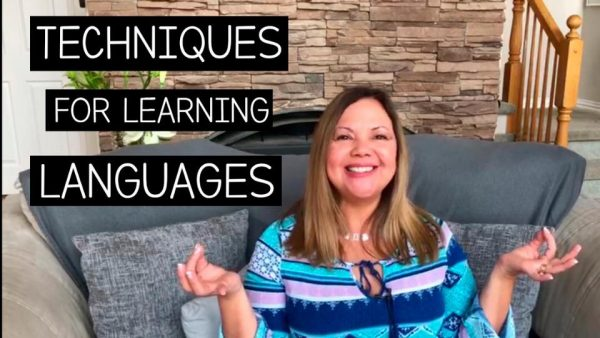
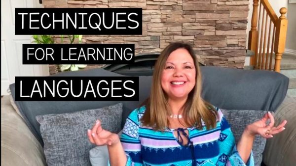

¡Hola! Soy Rosa León, agente de transformación en Desarrollo Personal y Emprendimiento
Saludos cordiales.
Soy Rosa León, Agente de Transformación en Desarrollo Personal y Negocios, especializada en cambio de creencias limitantes y creación de negocios, y soy la CEO de la marca Si Quiero. Por eso Puedo.
Tengo un doctorado en historia, un máster en metodología, uno en español como segunda lengua y especializaciones en diversas áreas como en coaching, Mindfulness coaching y negocios. Actualementeestoy prepárandome para mi Certificación Internacional como Consultora bilingüe de Negocios.
Mi experiencia como docente, coach y empresaria, me han ayudado a desarrollar programas que combinan estrategias de aprendizajes y de coaching para acompañar a las personas, que desean empoderarse y desplegar la mejor versión de si mismo, de modo que puedan lograr sus objetivos a través de cursos y programas online basados en fórmulas innovadoras que combinan lo mejor del mundo del aprendizaje y del entrenamiento.
Acompaño a profesionales y emprendedores a mejorar su proceso de crecimiento personal y a canalizar su energía y creatividad para ponerlas al servicio de los demás y de su negocio. Si quieres cambiar tu vida comienza por cambiar tu interior. Si quieres mejorar tu emprendimiento fórmate y consulta. El crecimiento va de adentro hacia afuera. Para cambiar tu futuro comienza cambiando tu presente. ¡Te ayudo con ello!
Consulta mi perfil en LinkedIn
Primer descargable gratis
 



 


Revisa las opiniones de quienes ya conocen mi trabajo:

¿Cuántas veces hemos querido conseguir todas las respuestas en un solo lugar? ¡Les cuento que Rosa León es una fuente de conocimiento de abundancia inigualable! Mi experiencia con Rosa en el primer taller de “Encuentra Tu Calma” me hizo reflexionar e interiorizar, evaluando mi estilo de vida actual y brindándome un “kit de primeros auxilios” para diagnosticar la manera de como manejo mi energía y así poder lograr canalizarla hacia la abundancia desde mi interior para ser reflejada en mi exterior.
Javier Dugarte